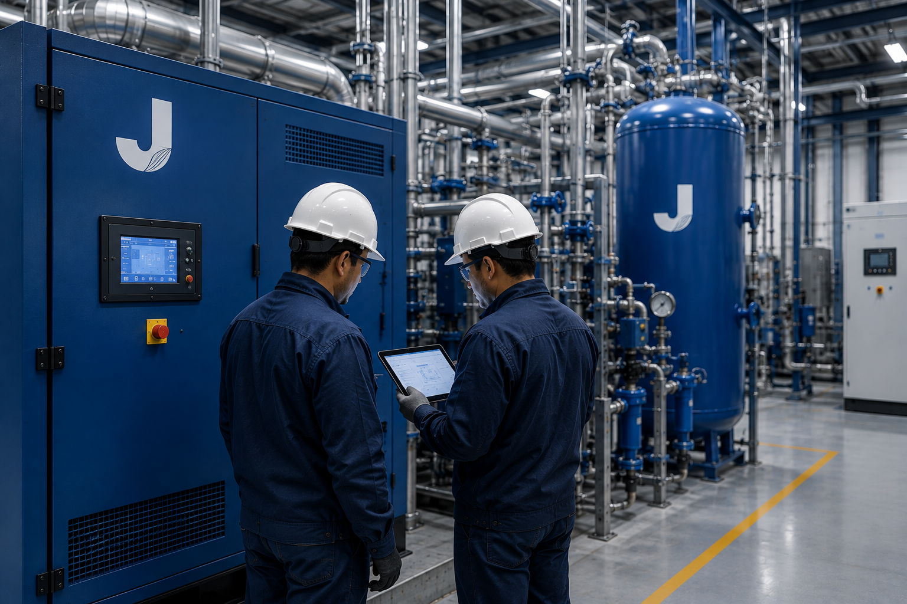

Curymarka SAC
Especialistas en mantenimiento industrial, sistemas de aire y oxígeno comprimido y soluciones electromecánicas para los sectores salud e industria.
Impulsamos la continuidad operativa de la industria con soluciones de ingeniería confiables.
Curymarka SAC es una empresa peruana especializada en mantenimiento industrial y soluciones electromecánicas para los sectores salud e industria. Trabajamos con un enfoque orientado a la seguridad, la continuidad operativa y la eficiencia de los procesos, ofreciendo servicios respaldados por personal técnico calificado y un compromiso permanente con la calidad en cada proyecto.
Casi una década impulsando la continuidad operativa de la industria peruana.
Desde 2017, Curymarka SAC desarrolla soluciones de ingeniería electromecánica para empresas e instituciones que requieren máxima confiabilidad en sus sistemas críticos. Nuestra experiencia en mantenimiento industrial, sistemas de aire comprimido y plantas de oxígeno medicinal nos ha permitido participar en proyectos para el sector salud, industrial e institucional, siempre con un enfoque basado en la calidad, la seguridad y el compromiso técnico.
Conoce nuestra empresa
Un aliado estratégico para la continuidad de tus operaciones.
En Curymarka SAC trabajamos con un enfoque orientado a la seguridad, la eficiencia y la confiabilidad operativa. Cada proyecto es desarrollado bajo altos estándares técnicos, brindando soluciones que ayudan a reducir tiempos de inactividad y garantizar el correcto funcionamiento de los sistemas críticos de nuestros clientes.
Ingeniería Especializada
Soluciones desarrolladas por profesionales con experiencia en mantenimiento electromecánico y sistemas industriales.
Compromiso con la Seguridad
Priorizamos procedimientos seguros y el cumplimiento de estándares técnicos para proteger personas, equipos y operaciones.
Respuesta Oportuna
Atendemos cada proyecto con rapidez, organización y una planificación enfocada en minimizar interrupciones operativas.
Relaciones de Confianza
Construimos relaciones a largo plazo ofreciendo atención cercana, soporte técnico y acompañamiento continuo.
Instituciones que respaldan nuestra trayectoria
A lo largo de nuestra trayectoria hemos desarrollado proyectos para instituciones del sector salud y entidades públicas del Perú, contribuyendo con soluciones de ingeniería orientadas a la continuidad operativa, la seguridad y la confiabilidad de su infraestructura.